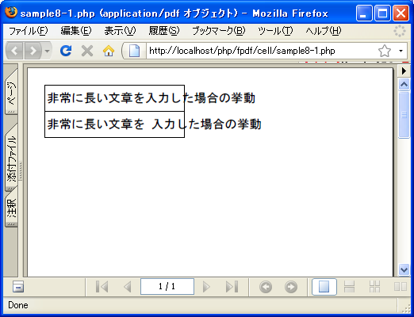
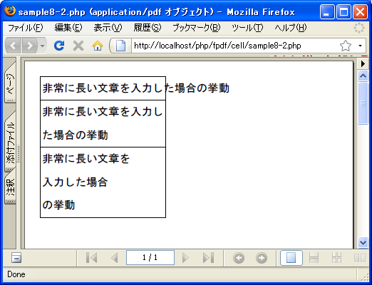

- Home ›
- FPDFを使ったPDF作成 ›
- 表の出力
セル内で文字列の改行(MultiCell)
Cellメソッドを使う場合、セル内に表示される文字列の長さがセルの幅を超えた場合でも自動的には改行されません。またWriteメソッドのように文字列の中に改行文字「¥n」が含まれていた場合でも改行は行われません。
<?php
require('fpdf/mbfpdf.php');
$pdf=new MBFPDF('P', 'mm', 'A4');
$pdf->AddMBFont(GOTHIC ,'SJIS');
$pdf->AddPage();
$pdf->SetFont(GOTHIC,'',20);
$pdf->Cell(80, 15, '非常に長い文章を入力した場合の挙動', 1, 1);
$pdf->Cell(80, 15, "非常に長い文章を¥n入力した場合の挙動", 1, 1);
$pdf->Output();
?>
上記のファイルをWWWサーバのドキュメントルート以下に設置しブラウザからアクセスすると次のように表示されます。

このようにセルの幅を無視して文字列が出力されてしまいます。セル内で文字列を自動で折り返したり、改行文字が現れた場合にセル内で改行をさせたい場合にはFPDFクラスで用意されているMultiCellメソッドを使います。
MultiCell(float w, float h, string txt [, mixed border
[, string align [, int fill]]])
このメンバ関数は文章を改行付で出力します。自動（文章がセルの右マージンに 達するか）、または明示（改行コード（¥n文字列）に達するか）を指定できます。 必要な数だけセルを下に追加して出力できます。 パラメータ: w セルの幅 h セルの高さ txt 表示する文字列 border 境界線 align テキストの位置
MultiCellメソッドを使った場合には、セル内の表示される文字列がセルの右端に達するか改行文字が文字列内に現れた時、セル内で文字列が自動的に折り返されます。
1番目の引数にセルの幅を指定します。単位はMBFPDFクラスのコンストラクタで指定した寸法の種類です。0を指定すると幅は画面の右端まで広がります。2番目の引数にセルの高さを指定します。単位は幅の場合と同じです。
3番目の引数にセル内に表示する文字列を指定します。デフォルトの値は空文字です。
4番目の引数には境界線を表示するかどうかを指定します。指定できる値は次の通りです。
0: 境界線なし 1: 境界線あり
数値の「1」を指定するとセルの上下左右に線を引きます。デフォルトの値は「0」です。また線を引く箇所を個別に引く場合は次の文字列を組み合わせて指定します。
L: left 左 T: top 上 R: right 右 B: bottom 下
例えば左と上だけ線を引く場合は「LT」を指定します。
5番目の引数にはテキストの位置を指定します。指定できる値は次の通りです。
L: 左寄せ(left align) C: センタリング(center) R: 右寄せ(right align) J: 揃えて配置(justification)
「L」を指定すると左寄せ、「C」でセンタリング、「R」で右寄せ、「J」で揃えて表示となります。省略時のデフォルトの値は「J 」です。
6番目の引数にはセルの背景色を塗りつぶすかどうかを指定します。指定できる値は次の通りです。
1: 背景色をセットする 0: 透過色にする
デフォルトの値は: 0です。
実際には次のように記述します。
<?php
require('fpdf/mbfpdf.php');
$pdf = new MBFPDF();
$pdf->AddMBFont(GOTHIC ,'SJIS');
$pdf->AddPage();
$pdf->SetFont(GOTHIC,'',20);
$link = 'http;//www.sample.jp/';
$pdf->MultiCell(0, 20, 'サンプル文字列', 1, 'L', 0);
$pdf->Output();
?>
サンプルプログラム
では簡単なサンプルで試してみます。
<?php
require('fpdf/mbfpdf.php');
$pdf=new MBFPDF('P', 'mm', 'A4');
$pdf->AddMBFont(GOTHIC ,'SJIS');
$pdf->AddPage();
$pdf->SetFont(GOTHIC,'',20);
$pdf->Cell(80, 15, '非常に長い文章を入力した場合の挙動', 1, 1);
$pdf->MultiCell(80, 15, '非常に長い文章を入力した場合の挙動', 1);
$pdf->MultiCell(80, 15, "非常に長い文章を¥n入力した場合¥nの挙動", 1);
$pdf->Output();
?>
上記のファイルをWWWサーバのドキュメントルート以下に設置しブラウザからアクセスすると次のように表示されます。

このようにMultiCellメソッドを使うことでセル内で改行が行えるようになります。ただしCellメソッドと異なりセルが下方向にしか追加できません。またリンクを設定することも出来ませんので注意して下さい。
( Written by Tatsuo Ikura )

著者 / TATSUO IKURA
初心者～中級者の方を対象としたプログラミング方法や開発環境の構築の解説を行うサイトの運営を行っています。